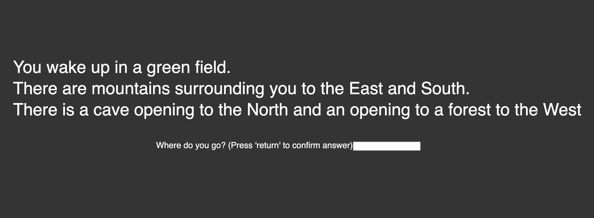
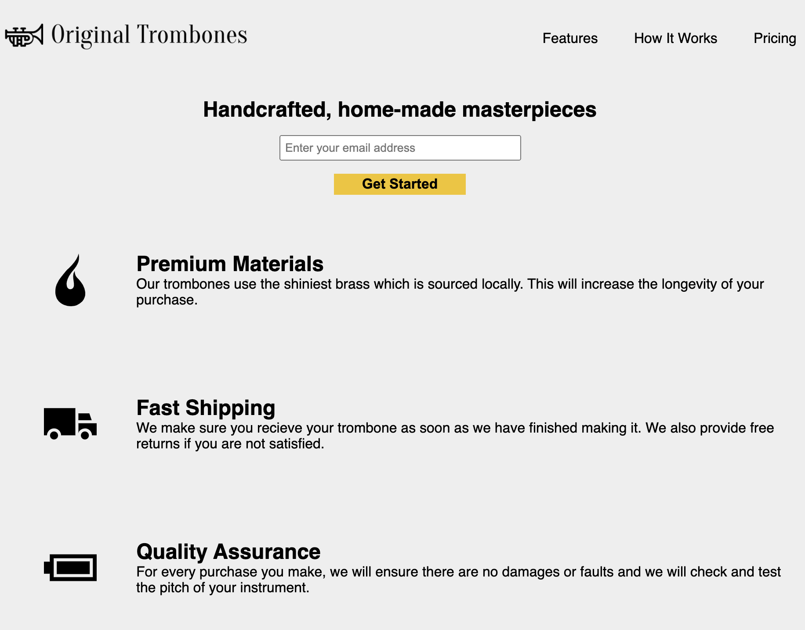

JavaScript Choose Your Own Adventure Game

This was my first experience integrating JavaScript into a webpage to create a fully functioning choose your own adventure game. The game, as it stands now, is incomplete but demonstrates a work in progress in which the player would be able to choose from a variety of choices to determine how his or her story will go. The game also features multiple endings to discover.
Play it yourself!
View the code on Github!
Landing Page Recreation

I recreated this landing page as a project for my Web Development 1 course in my first semester at Thaddeus Stevens College of Technology. In building this project, the goal was to not only recreate an existing page but to also practice and demonstrate our knowledge in responsive web design. As such, the page is designed with mobile first in mind and will change with a more complex design based on the device the page is being loaded on and the size of the device's screen.
View it yourself!
View the code on Github